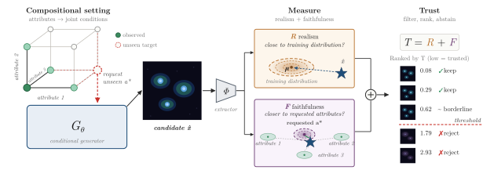
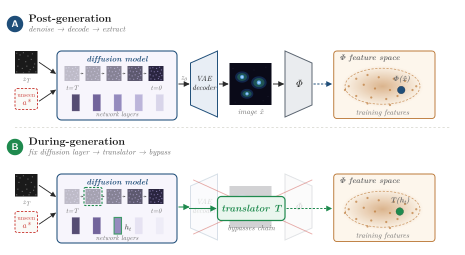
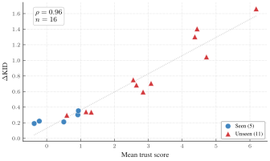
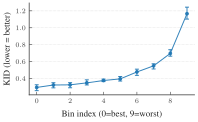
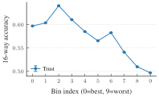
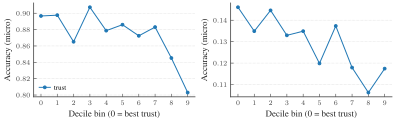
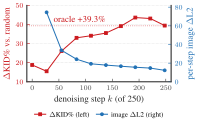

Assessing Sample Quality in Conditional Generation under Compositional Shift
A reference-free, per-sample trust score for extrapolative conditional generation
Conditional generators are a natural tool for controllable generation, including settings where the desired condition is a new composition of observed attributes or experimental factors — conditions for which real samples may be rare, expensive, or not yet observed. This creates a circularity for evaluation: standard conditional quality metrics require a reference target distribution, but in the extrapolative regime that distribution is unavailable by definition. We introduce a post-hoc, per-sample trust score that assesses conditional samples using only the training distribution. The score combines global realism (compatibility with the real data manifold) and attribute-wise faithfulness (whether a sample is closer to the requested attributes than to plausible alternatives). Under a mild coverage condition, the score recovers meaningful comparisons across extrapolated generations, enabling filtering, ranking, and abstention on off-the-shelf pretrained models. In biological imaging, selected samples better preserve real morphological structure and improve downstream prediction, with similar gains on controlled vision benchmarks; the score can also be applied during generation, enabling abstention before full decoding.

Teaser figure from the original paper (Demirel, Maiorca, Fumero, Karaletsos & Locatello, 2026). Highlights added for this walkthrough.
Step 01 — A compositional request We ask a conditional generator for an unseen composition a^\star — a combination of attributes (the corner of the cube) that was never jointly observed in training, even though each attribute value was seen on its own.
Step 02 — Generate a candidate The conditional generator G_\theta produces a candidate \hat x for that request. Because the composition is new, there is no real reference to compare it against — only the training distribution.
Step 03 — Measure realism and faithfulness An extractor \Phi embeds the candidate, and we score it on two axes: realism R — is it close to the real training distribution? — and faithfulness F — is it closer to the requested attributes than to the plausible alternatives?
Step 04 — Trust, then act Their sum T = R + F gives every candidate a single score. Ranking by T lets us keep the trustworthy samples, flag the borderline ones, and abstain on those past a threshold.
Introduction
Conditional generators let us request data: a face with a chosen set of attributes, or a cell under a chosen perturbation. The most valuable requests are often compositional — combinations of attributes that were never jointly observed at training time. In scientific domains this is precisely the point: we want to explore conditions for which real samples are rare, expensive, or not yet measured (Okawa et al. 2023).
This ambition collides with evaluation. Standard conditional quality metrics such as FID (Heusel et al. 2017) and KID (Bińkowski et al. 2018) compare generated samples against a reference target distribution. Under compositional shift that target does not exist by construction, so the metrics that would tell us whether a generation is good are exactly the ones we cannot compute.
We resolve this circularity with a post-hoc, per-sample trust score that uses only the training distribution. It needs no samples from the requested composition, runs on off-the-shelf pretrained models, and yields a scalar we can threshold for filtering, ranking, and abstention.
A reference-free trust score
We work in a feature space y \in \mathbb{R}^d (e.g. an encoder embedding). A request is a tuple of attribute values a^\star = (a_1^\star,\dots,a_K^\star). The trust score is the sum of two standardized terms — global realism and attribute-wise faithfulness:
T(y; a^\star) \;=\; R(y) \;+\; F(y; a^\star).
The pipeline below shows how a candidate is scored end to end — and how the same score can be applied during generation, before an image is fully decoded.

Figure from the original paper (Demirel, Maiorca, Fumero, Karaletsos & Locatello, 2026).The score itself is built from two terms, applied in turn:
- A sample with no reference. A conditional generator returns a sample y for the requested composition a^\star. Because that composition was never observed, there is no real target distribution to compare it against — only the training distribution.
- Global realism R(y). Is the sample plausible at all? We measure a Mahalanobis energy to the real-data statistics (\mu_{\text{real}}, \Sigma_{\text{real}}) (Lee et al. 2018) and standardize it. A sample far off the manifold has high energy and low realism.
- Attribute faithfulness F(y;a^\star). Did it honor the request? For each attribute we compare the sample’s distance to the requested prototype \eta(t) against its distance to the nearest competitor \eta(v\neq t). A sample genuinely closer to what was asked for than to any alternative is faithful — a negative gap M_k.
- Combine, then act. The trust score is T = R + F: a generation must be both realistic and faithful — a single failure mode is enough to lose trust. Sorting by T lets us rank, filter to a top fraction, or abstain on the doomed ones.
The two terms are defined precisely as follows. Global realism uses a Mahalanobis energy on real-data feature statistics (\mu_{\text{real}}, \Sigma_{\text{real}}) (Lee et al. 2018), standardized to a calibrated scale:
E_{\text{real}}(y) = (y-\mu_{\text{real}})^\top \Sigma_{\text{real}}^{-1}(y-\mu_{\text{real}}), \qquad R(y) = \frac{E_{\text{real}}(y) - m_R}{s_R}.
Attribute-wise faithfulness asks whether the sample lands closer to the requested attribute value than to the most plausible alternative. For attribute k with prototype \eta_{k,v} and a per-attribute metric P_k, the gap between the requested value t and the nearest competitor is
d_k(y; v) = (y-\eta_{k,v})^\top P_k (y-\eta_{k,v}), \qquad M_k(y; t) = d_k(y; t) - \min_{v \neq t} d_k(y; v),
and the overall faithfulness averages the standardized per-attribute gaps, F(y;a^\star) = \tfrac{1}{K}\sum_{k=1}^K F_k(y; a_k^\star) with F_k = (M_k - m_{k,t})/s_{k,t}. A negative M_k means the sample is genuinely closer to the requested attribute than to any alternative.
Why a sum? R guards against samples that drift off the data manifold, while F guards against samples that ignore the request. A good generation must satisfy both; a single failure mode is enough to lose trust.
When can a missing target be recovered?
The key theoretical condition is reference coverage: there exists a reference assignment \bar a such that for every attribute k and every value v, the marginal \mathbb{P}(a_k = v,\; a_{-k} = \bar a_{-k}) > 0.1 Intuitively, each attribute value must have been observed alongside a fixed background context, so per-attribute prototypes are estimable even when the requested joint composition was never seen.
1 This is far weaker than observing the joint composition itself; it only asks that each attribute appear once against a common reference, which holds in many factorial scientific designs.
Experiments
We evaluate on a biological-imaging task and a controlled vision benchmark, scoring samples from off-the-shelf conditional diffusion models — a vanilla SiT-B/2 transformer and two representation-aligned (REPA) variants. Latent-diffusion approaches (Rombach et al. 2022) are the broader family this builds on.
RxRx1 (fluorescent microscopy). Conditions are 4 cell types \times 1138 siRNA perturbations. We hold out unseen compositions and validate using CellProfiler morphology features (Carpenter et al. 2006). Trust-selected samples move closer to real morphology centroids — on already-seen conditions the real-spread-normalized distance drops by roughly 50–83%, with smaller but consistent gains (around 18–29%) on the harder unseen compositions — and improve downstream prediction.
CelebA (controlled vision). Four binary attributes (Male, Smiling, Blond, Eyeglasses) give 16 conditions; the model trains on only 5 (an all-zero reference plus single-attribute conditions) and is queried on all 16. The score ranks and filters the extrapolated generations.

Figure from the original paper (Demirel, Maiorca, Fumero, Karaletsos & Locatello, 2026).Sorting by trust, then choosing where to cut
Once every sample has a trust score, selection is just a threshold: keep the samples whose score clears the bar, abstain on the rest — exactly the ranked, thresholded list on the right of the teaser figure above.
The score correlates strongly with held-out KID (where it can be measured), so the ordering it induces is meaningful even where the target distribution is unavailable.
Selecting by trust drives the accepted-set KID well below the unfiltered baseline on both datasets, with rank correlation \rho(T) of 0.96 (CelebA) and 0.90 (RxRx1) against held-out KID:
| Dataset | Model | Accept % | KID (trust) | KID (baseline) | Improvement | \rho(T) |
|---|---|---|---|---|---|---|
| CelebA | Vanilla | 58.7 | 0.224 | 0.368 | +39.1 % | 0.96 |
| RxRx1 | Vanilla | 4.4 | 0.196 | 0.323 | +39.4 % | 0.90 |
Trust as a ranker, not just a filter. Beyond a single threshold, partitioning generated samples into class-balanced trust deciles and training a separate condition classifier on each decile shows that worse trust deciles yield both worse KID and less useful training data. On CelebA, \DeltaKID degrades by roughly 4\times from the best to the worst decile, while downstream classification accuracy drops by about 10% when training on the lowest-trust samples.


CelebA decile binning (REPA-DINOv3 held-out, DINOv3 scoring). \DeltaKID increases monotonically from bin 0 (best trust) to bin 9 (worst) (left), and correlates with downstream classification accuracy drops (right). Figure from the original paper (Demirel, Maiorca, Fumero, Karaletsos & Locatello, 2026).
Biological validation in CellProfiler space. On RxRx1, the same decile ordering holds in interpretable CellProfiler morphology features — independent of the learned validation encoder — confirming that trust ordering improves downstream utility in a biologically meaningful space.

Figure from the original paper (Demirel, Maiorca, Fumero, Karaletsos & Locatello, 2026).Scoring during generation. Because the realism and faithfulness terms act on partially decoded features, the score can be evaluated before full decoding. On CelebA (250 denoising steps), scoring as early as step k \approx 83 already recovers a 33% KID improvement while saving roughly 67% of the denoising compute, and by step k \approx 166 the early score matches the post-generation result — enabling early abstention on doomed generations.

Figure from the original paper (Demirel, Maiorca, Fumero, Karaletsos & Locatello, 2026).Conclusion
Extrapolative conditional generation breaks the metrics we usually trust, because the target distribution is missing by definition. A per-sample score built from only the training distribution — realism against the data manifold plus faithfulness to the requested attributes — restores meaningful comparisons under a mild coverage condition. It needs no retraining, attaches to pretrained models, and supports filtering, ranking, and early abstention, with consistent gains on both biological imaging and controlled vision. Connections to energy-based out-of-distribution detection (Liu et al. 2020) and to fidelity/diversity metrics (Naeem et al. 2020) suggest the score is a general lens on conditional sample quality rather than a single benchmark trick.
Citation
@article{demirel2026,
author = {Demirel, Berker and Maiorca, Valentino and Fumero, Marco and
Karaletsos, Theofanis and Locatello, Francesco},
title = {Assessing {Sample} {Quality} in {Conditional} {Generation}
Under {Compositional} {Shift}},
journal = {arXiv preprint},
date = {2026-06-08}
}